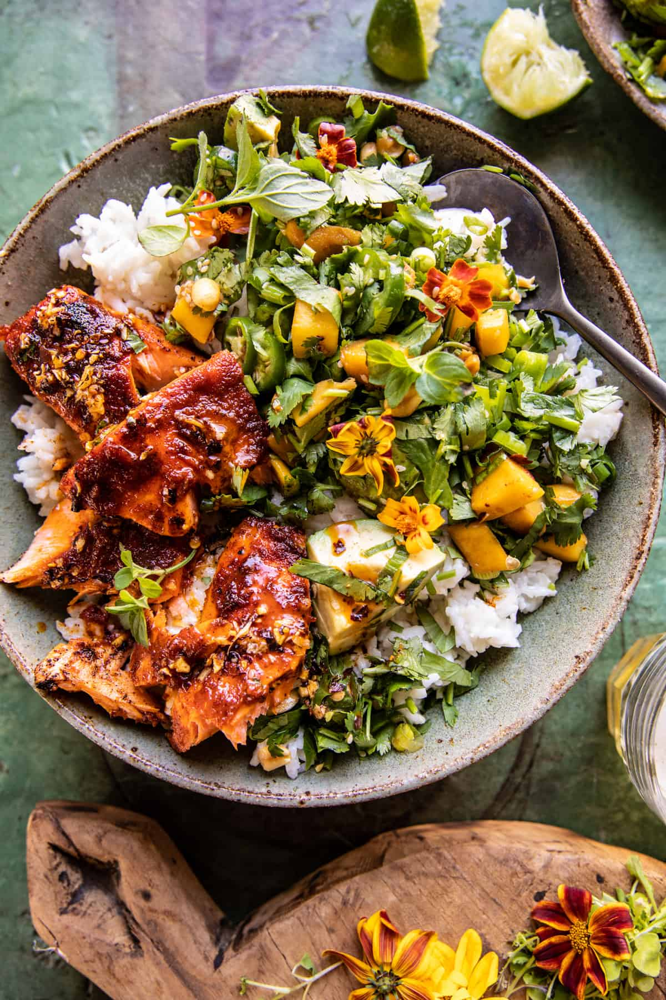

Chili Crisp Salmon Bowl with Avocado Mango Salsa

Description
This colorful Chili Crisp Salmon Bowl with Avocado Mango Salsa is full of
Thai flavors and made so simply. Made with flavorful Thai curry paste and
doused in a homemade chili onion crisp butter sauce. The salmon is cooked
until caramelized around the edges then added to bowls of rice. A fresh,
bright mango-avocado herb salsa is spooned overtop for a balance of spicy,
sweet, tangy, and savory flavor. Altogether, it's so delicious and made in
about 30 minutes. The perfect spring and summer dinner bowl!
Ingredients
SALSA
- 1 large mango, diced
- 1 jalapeno pepper, seeded and sliced
- 1/2 cup fresh cilantro and/or cilantro, chopped
- 3 tablespoons mixed sesame and/or sunflower seeds
- 1/4 cup lime juice
- 1 avocado, cubed
SALMON
- 1 1/2 -2 pounds salmon cut into 2-3 pieces
- 2 tablespoons extra virgin olive oil
- 1/4 cup Thai red curry paste
- 1 tablespoon brown sugar
- 1 tablespoon spicy curry powder
- 1 tablespoon fish sauce, tamari sauce, or soy sauce
- 6 tablespoons salted butter
- 2 cloves garlic, chopped
- 1/4 cup minced onion flakes
- chili flakes
- 3-4 cups cooked rice
Steps
- To make the salsa. Gently toss all ingredients in a bowl. Season with salt.
- Preheat the oven to 450° F. Place the salmon on a baking sheet.
- In a bowl, mix the olive oil, red curry paste, brown sugar, curry powder, and fish sauce. Rub the paste all over the salmon. Roast 10 minutes or until the fish is cooked to your liking. Switch the oven to broil and broil until lightly charred (watch closely!).
- Meanwhile, in a small skillet melt together the butter, garlic, and a pinch of chili flakes. Cook until the butter is browning and the garlic is crisp. Mix in the onion flakes.
- Break the salmon over the bowls of rice. Pour the chili butter over the salmon. Top with the mango salad. Enjoy!